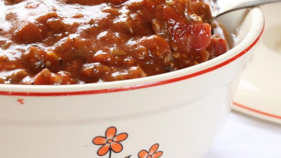
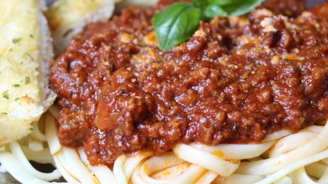
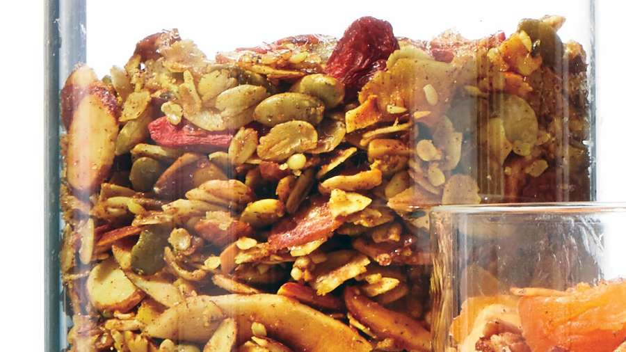

Fovourite Recipes

Bobbie's Spaghetti Sauce
This sauce is so amazing. I was trying to think of a good sauce without having too much of a tomato taste, and this does it. The mixture of veggies and seasonings does it. To make this more spicy, you can add fresh chiles or hot red peppers crushed. I don't like really hot food, so this was perfect for us. The vinegar makes it have a bit of a bite to it.
Ingredients
Procedures
- 2 teaspoons olive oil
- 1 (12 ounce) package pork sausage links
- 1/2 pound ground beef
- 1 (10 ounce) can diced tomatoes with green chile peppers
- 6 fresh basil leaves, minced
- Heat olive oil in a large pot. Cook sausage links and ground beef in the hot oil until the sausages are cooked through and no longer pink in the center, 3 to 5 minutes per side. Stir mushrooms, red bell pepper, yellow bell pepper, and onion into the meat mixture; cook and stir until he vegetables are tender, 5 to 7 minutes.
- Remove sausages from pot to a cutting board to cool slightly; cut into bite-size pieces and return to the pot. Add tomato sauce, diced tomatoes with green chile peppers, tomato paste, balsamic vinegar, oregano, basil, thyme, kosher salt, black pepper, and marjoram to the pot; stir. Reduce heat to low and cook at a simmer, stirring every so often, for 2 to 3 hours.

Wedding Gift Spaghetti Sauce
This recipe was given to me as part of a wedding gift recipe collection from a very dear friend. It is rich, aromatic, flavorful and makes A LOT. So please grab the biggest pot you can find. I mean REALLY BIG. Extra sauce freezes well for future pasta dishes.
Ingredients
Procedures
- 1/2 cup butter
- 3 tablespoons olive oil
- 1 large onion, chopped
- 3 cloves garlic, chopped
- 1 pound ground beef
- Heat butter and olive oil together with onion and garlic in a large pot over medium heat; cook and stir ground beef and sausage in the onion mixture until browned and crumbly, 10 to 15 minutes. Stir Italian seasoning, salt, rosemary, oregano, and black pepper into ground beef-sausage mixture; simmer for 20 minutes.
- Pour water, tomato puree, and tomato paste into ground beef-sausage mixture; simmer, stirring occasionally, over low heat until flavors have combined, at least 2 hours.

Richard and Suzanne's Famous Spaghetti Sauce
Bell peppers are stuffed with a spicy blend of chorizo, onions, garlic, fresh herbs, Worcestershire, three kinds of cheese, and rice. If you have a taste for spice, you'll love them. Don't let the number of ingredients scare you!
Ingredients
Procedures
- 2 1/2 cups old fashioned rolled oats
- 2 cups sliced almonds
- 1 large onion, diced/li>
- 1 cup pumpkin seeds
- 1/2 cup unsweetened coconut flakes
- Omit 1/2 cup oats from basic recipe; add 1/2 cup hempseed. Reduce cinnamon to 1 Tbsp.; add 1 tsp. each ground ginger and ground turmeric. Reduce olive oil to 1/4 cup; add 3 Tbsp. melted and cooled coconut oil. Add 1/2 cup goji berries to cooled granola.